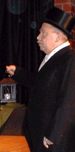
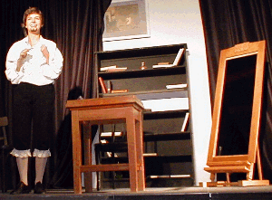
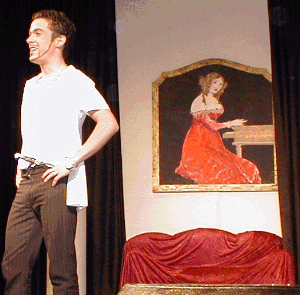
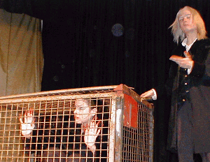
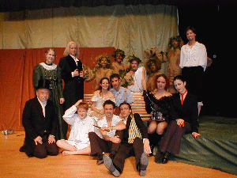

Christian Dietrich Grabbe
Bilder einer Aufführung
Die Teufelin
rasiert hingebungsvoll einen Totenschädel.
Magdalene Fischer gibt dem Teufel ein
betont weibliches Profil: süße freche Katze
fährt die Krallen aus, um gewaltig böse
und gemein zu sein. Das muss Grabbe
gefallen haben, hier vortrefflich gemimt
von Nachtwächter Walter Hunger.



Rattenscharf,
dieser Rattengift. Eine mitreißende
Show liefert Katja Chevtsova als
Möchtegern-Dichter Rattengift ab:
So schwärmerisch, realitätsblind
und selbstverliebt wird kaum
ein anderer Grabbes Poeten-Parodie
ins Ziel bringen können. Zorro,
ein Kerl wie ein Pfau. Alexis Weege
braucht nur die Bühne zu betreten
und das Publikum tobt.
Bevor auch nur das erste Wort über
seine Lippen kommt. Eine schier unglaubliche
Bühnenpräsenz, die Caballero Weege allerdings
zu einem großen Teil der fabelhaften
Maske zu verdanken hat. Aber er kann
diesen Typ des eitlen Galans
mimisch eben auch hervorragend
darstellen.

Gefangen!
Der schreckliche Schulmeister
hat die Teufelin eingesperrt,
um sie als Ausstellungsstück
zu benutzen. Er will mit ihr
richtig Kohle machen.
Mit in die Höhe geschraubter Stimme
verleiht Maurice Höwlers seiner Figur,
die moralisch korrumpiert ist
und der Alkoholsucht erliegt,
zusätzlich noch etwas Eunuchenhaftes.
zurück zur Homepage!Solide gepixelt.
Das Vollbild (400 k)
kann als ZIP-Archiv
an dieser Stelle
heruntergesaugt werden.
Dann durch den Drucker jagen.
DIN-A-4-Format ist drin.
TEXT/FOTOS: GÄRTNER
